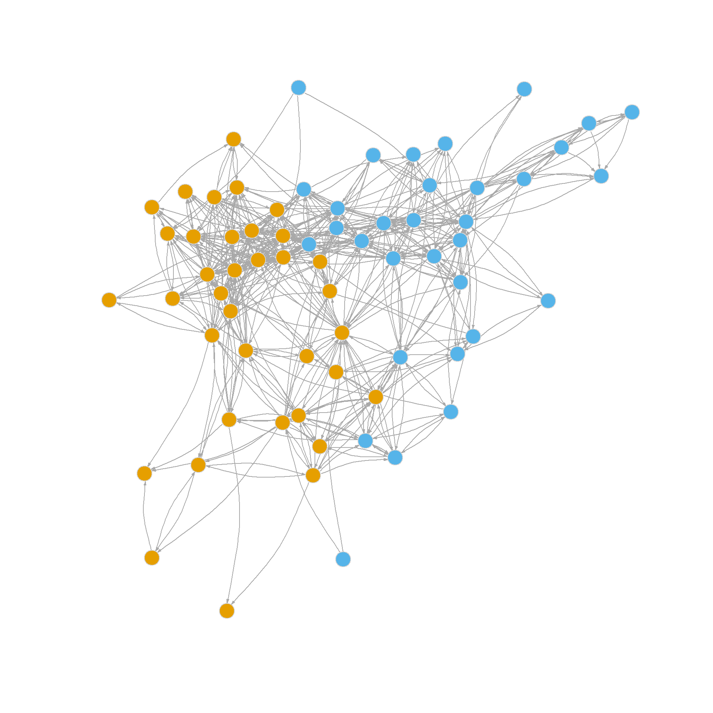
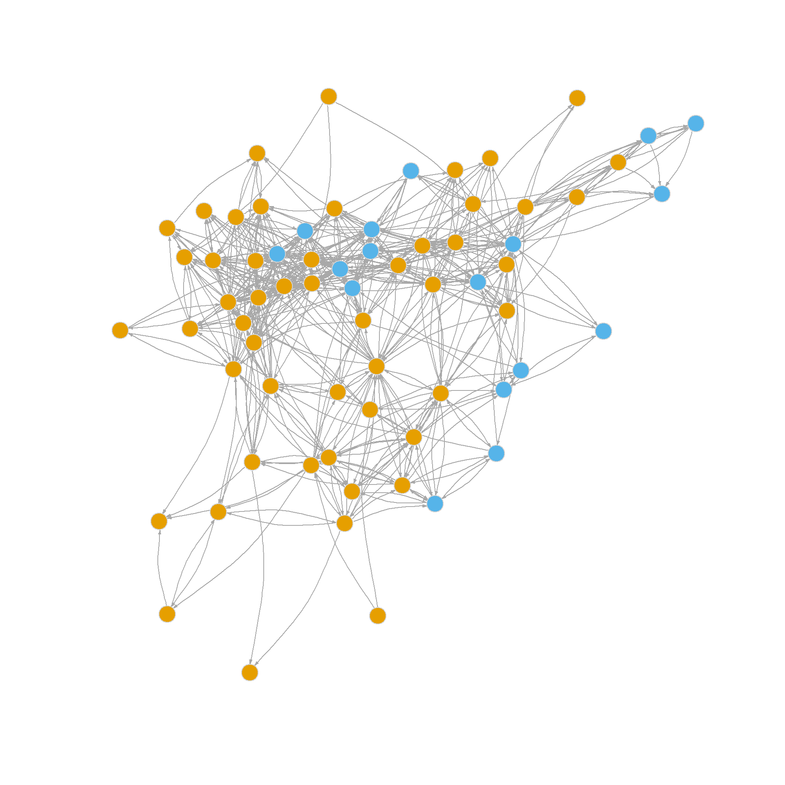
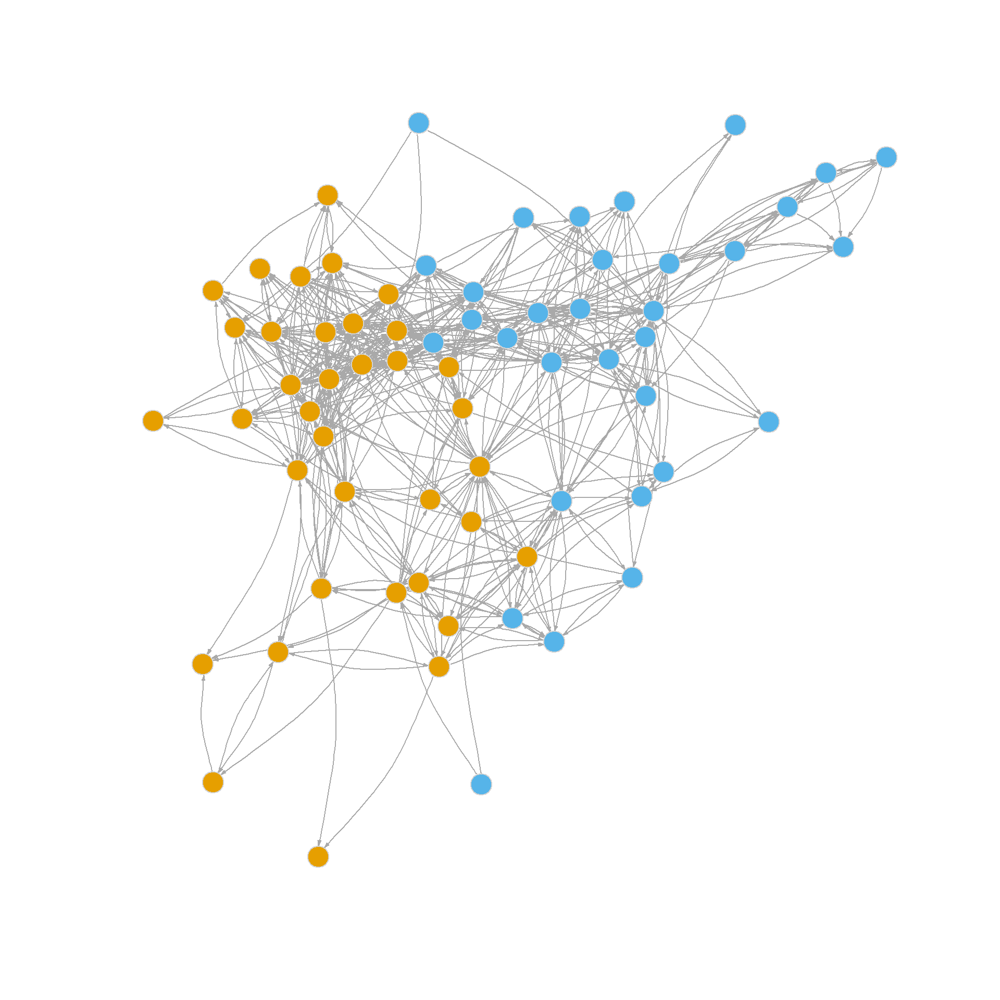
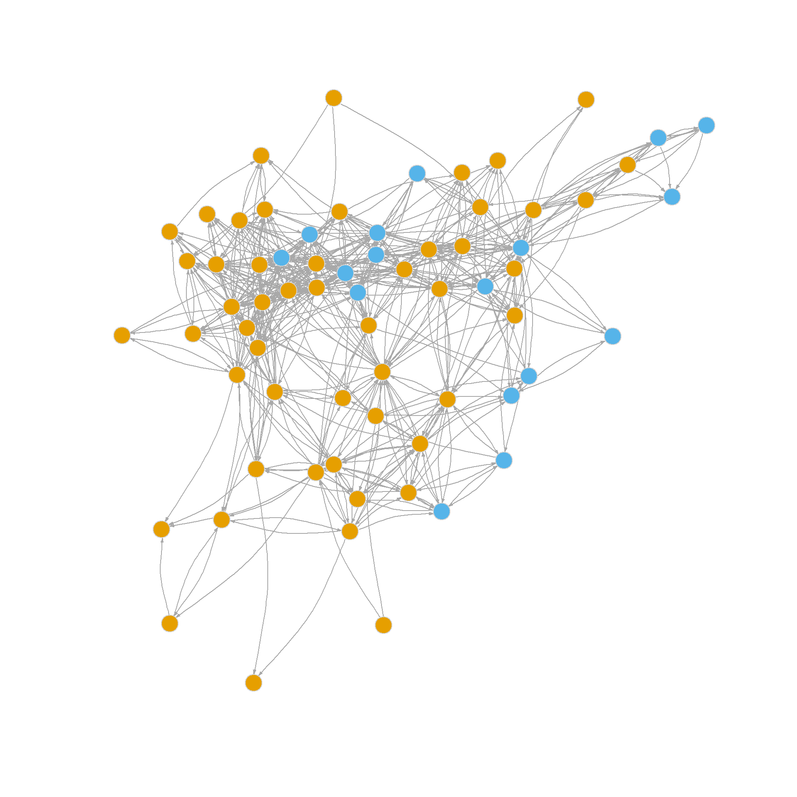
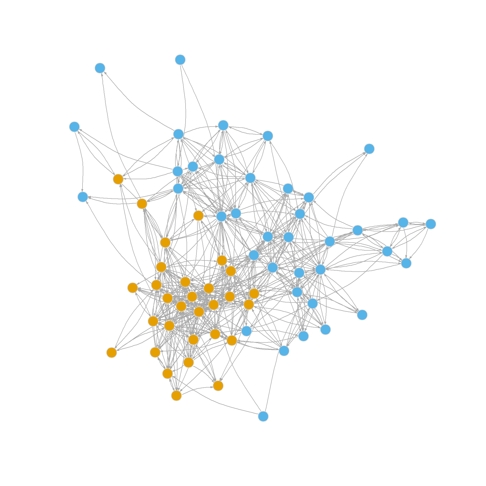

What are communities? In networks, communities are subset of nodes that have more interactions or connectivity within themselves than they do outside of themselves (these are sometimes called “modules” outside of sociology). Communities thus exemplify the sociological concept of a group.
A network has community structure if it contains many such subsets or groups of nodes that interact preferentially among themselves. Not all networks have to have community structure; a network in which all nodes interact with equal propensity doesn’t have communities.
So whether a network has community structure, and whether a given guess as to what these communities are yields actual communities (cluster of nodes that interact more among themselves than they do with outsiders) is an empirical question than needs to be answered with data.
But first, we need to develop a criterion for whether a given partition of the network into mutually exclusive node subsets is actually producing communities as we defined them earlier. This criterion should be independent of particular methods and algorithms that claim to find communities, so that way we can compare them with one another and see whether the partitions they recommend yield actual communities.
Mark Newman, who has done the most influential work in this area, proposed such a criterion and called it the modularity of a partition (e.g., the extent to which a partition has identified the “modules” or subsets of the network).
An intuitive way to understand the modularity is as follows. Imagine we have an idea of what the communities in a network are. This could be given by some special community partition method, our intuition, or some exogenous coloring on the nodes (e.g., as given by a node attribute like race, gender, position in the organization, etc.). The membership of each node in each community is thus stored in a vector, \(C_i = k\) if node \(i\) belongs to community \(k\).
Our job is to decide whether that community partition is a good one. One way to proceed is to imagine that we take the network in question, and we throw each observed link into a bag. Then our modularity measure should give us an idea of the probability that if we drew a link at random, the nodes at the end of each link belong to same community (or have the same color if the communities are defined by exogenous attributes). If the probability is high, then the network has community structure. If the probability is no better than we would expect given a null model that says there is nothing going on in the network connectivity-wise except random chance, then the modularity should be low (and we decide that the partition we chose actually does not divide the network into meaningful communities).
Let’s assume our bag of links is full of directed links and we draw a bunch of them at random. Let’s call the node at the starting end of the link \(s\) and the node at the destination end of the link \(d\). Then we can measure the modularity—let’s call it \(Q\)—of a given partition of the network into \(m\) clusters as follows:
\[ Q <- \sum_{k = 1}^m \left[P(s \in k \land d \in k) - P(s \in k) \times P(d \in k) \right] \]
In this equation, \(P(s \in k \land d \in k)\) is the probability that a link drawn at random has a source and a destination node that belong to the same community \(k\); \(P(s \in k)\) is just the probability of drawing a link that has a starting node in community \(k\) (regardless of the membership of the destination node) and \(P(d \in k)\) is the probability of drawing a link that has a destination node that belongs to community \(k\) (regardless of the membership fo the source node).
If you remember your elementary probability theory, you know that the joint probability of two events that are assumed to be independent of one another is just the product of their individual probabilities. So that means that \(P(s \in k) \times P(d \in k)\) is the expected probability of finding that both the source and destination node are in the same community \(k\) in a network in which communities don’t matter for link formation (because the two probabilities are assumed to be independent).
So the formula for the modularity subtracts the observed probability of finding links with two nodes in the same community from what we would expect if communities didn’t matter. So it measures the extent to which we find within-community links in the network beyond what we would expect by chance. Obviously, the higher this number, the higher the deviation from chance is, and the more community structure there is in the network.
Let’s move to a real example. Below are two plots of the advice network from the law_friends data from the networkdata package. The first shows the nodes colored by status in the firm (partners versus associates) and the other shows the nodes colored by gender. It is pretty evident that there is more community by status than by gender; that is, friendship nominations tend to go from people of a given rank to people of the same rank, which makes sense. So a measure of modularity should be higher when using status as our partition than when using gender.


Let’s see an example of the modularity computed using our “bag of links” framework. Below is a quick function that uses dplyr code to take a graph as input and return and edge list data frame containing the “community membership” of each node by some characteristic given by the second input into the function.
link.bag <- function(x, c) {
library(dplyr)
g.el <- data.frame(as_edgelist(x))
names(g.el) <- c("vi", "vj")
comm.dat <- data.frame(vi = as.vector(V(x)),
vj = as.vector(V(x)),
c = as.vector(c))
el.temp <- data.frame(vj = g.el[, 2]) %>%
left_join(comm.dat, by = "vj") %>%
dplyr::select(c("vj", "c")) %>%
rename(c2 = c)
d.el <- data.frame(vi = g.el[, 1]) %>%
left_join(comm.dat, by = "vi") %>%
dplyr::select(c("vi", "c")) %>%
rename(c1 = c) %>%
cbind(el.temp)
return(d.el)
}So if we wanted an edge list data frame containing each node’s status membership in the law_advice network, we would just type:
vi c1 vj c2
1 1 1 2 1
2 1 1 4 1
3 1 1 8 1
4 1 1 17 1
5 2 1 16 1
6 2 1 17 1Note than an edge list is already a “bag of links” so we can compute the three probabilities we need to compute the modularity of a partition directly from the edge list data frame. Here’s a function that does this:
mod.Q1 <- function(x, c1 = 2, c2 = 4) {
Q <- 0
comms <- unique(x[, c1])
for (k in comms) {
e.same <- x[x[, c1] == k & x[, c2] == k, ]
e.sour <- x[x[, c1] == k, ]
e.dest <- x[x[, c2] == k, ]
e.total <- nrow(x)
p.same <- nrow(e.same)/e.total
p.sour <- nrow(e.sour)/e.total
p.dest <- nrow(e.dest)/e.total
Q <- Q + (p.same - (p.sour * p.dest))
}
return(Q)
}This function takes the edge list data frame as input. Optionally, you can specify the two columns containing community membership info for the source and destination node in each link (in this case this happens to be the second and fourth columns). The Function works like this:
The probability of a link drawn randomly from the bag is just the number of links where the source and destination links belong to the same community (e.same, computed in line 5) divided by the total number of links (which is the number of rows in the edge list data frame), this ratio is computed in line 9 (p.same).
The overall probability of a link containing a source node in community \(k\) is computed in line 10 (p.sour), and the overall probability of a link containing a destination node in community \(k\) is computed in line 11 (p.dest).
The actual modularity is computed step by step by summation across levels of the community indicator variable in line 12 which is the sum of the difference between p.same and the product of p.sour times p.dest across all communities \(m\) (in this case \(m = 2\) as there are only two levels of status).
So if wanted to check if status was more powerful in structuring the community organization of the law_friends network than gender, we would just type:
Which indeed confirms that status is a more powerful group formation principle than gender in this network.
Note that while the “bag of links” idea is good for showing the basic probabilistic principle behind the modularity in a network, we can compute directly from the adjacency matrix without going through the edge list data frame construction step.
A function that does this looks like:
This function just takes a graph and a vector indicating the community membership of each node and returns the modularity as output. Like before the modularity is the difference in the probability of observing a within-community link between two nodes (given by the ratio of the number of links in the sub-adjacency matrix containing only within community-nodes—obtained in line 7—and the overall number of links in the adjacency matrix, computed in line 3) and the expected probability of a link between a source node with community membership \(k\) and a destination node with the same community membership.
This last quantity is given by the product of the sum links in a the sub-adjacency matrix with row nodes that belong to community \(k\) (the source nodes) and the number of links in the sub adjacency matrix with the column nodes belonging to community \(k\) (the destination nodes) divided by the square of the total number of links observed the network.
In formulese:
\[\begin{equation} Q = \sum_{k=1}^m \left[\frac{\sum_{i \in k} \sum_{j \in k} a_{ij}}{\sum_i \sum_j a_{ij}} - \frac{(\sum_{i \in k} \sum_j a_{ij})(\sum_i \sum_{j \in k} a_{ij})}{(\sum_i \sum_j a_{ij})^2} \right] \end{equation}\]
Where \(\sum_i \sum_ja_{ij}\) is the sum of all the entries in the network adjacency matrix, \(\sum_{i \in k} \sum_{j \in k} a_{ij}\) is the sum of all the entries of the sub-adjacency matrix where both the row and column nodes come from community \(k\), \(\sum_{i \in k} \sum_j a_{ij}\) is the sum of all the entries in the sub-adjacency matrix where only the row nodes come from community \(k\), and \(\sum_i \sum_{j \in k} a_{ij}\) is the sum of all the entries in the sub-adjacency matrix where only the column nodes come from community \(k\).
We can easily see that this approach gives us the same answer as the bag of links version:
Of course, you don’t even have to use a custom function like the above, because igraph has one, called (you guessed it) modularity:
But at least now you know what’s going on inside of it!
Obviously, the modularity wouldn’t be a famous method if it was just a way of measuring the goodness of a community partition produced by other methods. It itself can be used to find community partitions by using a method that somehow produces node partition that find the largest values that it can take in a graph.
A useful tool in this quest is what is called the modularity matrix (\(\mathbf{B}\)), which is defined as a variation on the adjacency matrix (\(\mathbf{A}\)), with each cell \(b_{ij}\) taking having the value:
\[ b_{ij} = a_{ij} - \frac{k^{out}_ik^{in}_j}{\sum_i\sum_j a_{ij}} \]
Where \(k^{out}_i\) is node \(i\)’s outdegree and \(k^{in}_j\) is node j’s indegree. Note that the modularity matrix has the same “observed minus expected” structure as the formulas for the modularity. In this case we compare whether we see a link from \(i\) to \(j\) as given by \(a_{ij}\) against the probability of observing a link in a graph in which nodes connect at random with probability proportional to their degrees (as given by the right-hand side fraction).
A function to compute the modularity matrix by looping through every element of the adjacency matrix looks like:
Peeking inside the resulting matrix:
[,1] [,2] [,3] [,4] [,5] [,6] [,7] [,8] [,9] [,10]
[1,] -0.035 0.930 -0.028 0.902 -0.035 -0.014 -0.014 0.951 -0.098 -0.028
[2,] -0.035 -0.070 -0.028 -0.098 -0.035 -0.014 -0.014 -0.049 -0.098 -0.028
[3,] 0.000 0.000 0.000 0.000 0.000 0.000 0.000 0.000 0.000 0.000
[4,] -0.131 0.739 0.895 -0.366 -0.131 -0.052 -0.052 -0.183 0.634 -0.105
[5,] -0.026 -0.052 -0.021 -0.073 -0.026 -0.010 0.990 -0.037 -0.073 -0.021
[6,] 0.000 0.000 0.000 0.000 0.000 0.000 0.000 0.000 0.000 0.000
[7,] -0.017 -0.035 0.986 -0.049 0.983 -0.007 -0.007 -0.024 -0.049 -0.014
[8,] -0.009 -0.017 -0.007 -0.024 -0.009 -0.003 -0.003 -0.012 -0.024 -0.007
[9,] -0.052 -0.105 -0.042 0.854 -0.052 -0.021 -0.021 -0.073 -0.146 -0.042
[10,] -0.122 0.756 -0.098 -0.341 -0.122 -0.049 -0.049 0.829 0.659 -0.098Interestingly, the matrix has some negative entries, some positive entries and some close to or actually zero. We interpret these as follows: If an entry is negative it means that a link between the row and column nodes is much less likely to happened than expected given the each node’s degrees, a positive entry indicates the opposite; a larger than expected chance of a link forming. Entries close to zero indicate those nodes have odds close to random chance of forming a tie.
Of course igraph has a function, called modularity_matrix, which gives us the same result:
[,1] [,2] [,3] [,4] [,5] [,6] [,7] [,8] [,9] [,10]
[1,] -0.035 0.930 -0.028 0.902 -0.035 -0.014 -0.014 0.951 -0.098 -0.028
[2,] -0.035 -0.070 -0.028 -0.098 -0.035 -0.014 -0.014 -0.049 -0.098 -0.028
[3,] 0.000 0.000 0.000 0.000 0.000 0.000 0.000 0.000 0.000 0.000
[4,] -0.131 0.739 0.895 -0.366 -0.131 -0.052 -0.052 -0.183 0.634 -0.105
[5,] -0.026 -0.052 -0.021 -0.073 -0.026 -0.010 0.990 -0.037 -0.073 -0.021
[6,] 0.000 0.000 0.000 0.000 0.000 0.000 0.000 0.000 0.000 0.000
[7,] -0.017 -0.035 0.986 -0.049 0.983 -0.007 -0.007 -0.024 -0.049 -0.014
[8,] -0.009 -0.017 -0.007 -0.024 -0.009 -0.003 -0.003 -0.012 -0.024 -0.007
[9,] -0.052 -0.105 -0.042 0.854 -0.052 -0.021 -0.021 -0.073 -0.146 -0.042
[10,] -0.122 0.756 -0.098 -0.341 -0.122 -0.049 -0.049 0.829 0.659 -0.098The modularity matrix has some interesting properties. For instance, both its rows and columns sum to zero:
[1] 0 0 0 0 0 0 0 0 0 0 0 0 0 0 0 0 0 0 0 0 0 0 0 0 0 0 0 0 0 0 0 0 0 0 0 0 0 0
[39] 0 0 0 0 0 0 0 0 0 0 0 0 0 0 0 0 0 0 0 0 0 0 0 0 0 0 0 0 0 0 [1] 0 0 0 0 0 0 0 0 0 0 0 0 0 0 0 0 0 0 0 0 0 0 0 0 0 0 0 0 0 0 0 0 0 0 0 0 0 0
[39] 0 0 0 0 0 0 0 0 0 0 0 0 0 0 0 0 0 0 0 0 0 0 0 0 0 0 0 0 0 0Which makes \(\mathbf{B}\) doubly centered a neat but so far useless property.
Here’s a more useful property. Remember the network distribution game we played to defined our various reflective status measure in Handout 3? What if we played it with the modularity matrix?
status1 <- function(A) {
n <- nrow(A) #number of actors
x <- rep(1, n) #initial status vector set to all ones
w <- 1
k <- 0 #initializing counter
while (w > 0.0001) {
o.x <- x #old status scores
x <- A %*% x #new scores a function of old scores and adjacency matrix
x <- x/norm(x, type = "E") #normalizing new status scores
w <- abs(sum(abs(x) - abs(o.x))) #diff. between new and old scores
k <- k + 1 #incrementing while counter
}
return(as.vector(x))
} [1] 0.06 0.07 0.00 0.18 0.00 0.00 -0.01 0.01 0.09 0.22 0.08 0.28
[13] 0.15 0.05 0.06 0.08 0.28 -0.11 -0.02 0.15 0.13 0.13 0.01 0.23
[25] 0.18 0.15 0.19 -0.05 0.17 0.07 -0.07 -0.03 -0.05 0.04 -0.08 0.04
[37] 0.04 0.02 0.05 -0.06 -0.19 0.06 -0.04 -0.03 -0.02 -0.08 -0.10 -0.09
[49] -0.12 -0.02 -0.17 0.00 -0.17 -0.12 -0.23 -0.08 -0.07 -0.07 -0.08 -0.02
[61] -0.30 -0.15 -0.20 -0.06 -0.11 -0.09 -0.13 -0.04This seems more interesting. The resulting “status” vector has both negative and positive entries. What if I told you that this vector is actual a partition of the original graph into two communities?
Not only that, I have even better news. This is the partition that maximizes the modularity in the graph, the best two-group partition that has the most edges within groups and the least edges going across groups.
Let’s see some evidence for these claims in real data.
First, let’s turn the “status” vector into a community indicator vector. We assign all nodes with scores larger than zero to one community and nodes with scores equal to zero or less to the other one:
[1] 1 1 2 1 1 2 2 1 1 1 1 1 1 1 1 1 1 2 2 1 1 1 1 1 1 1 1 2 1 1 2 2 2 1 2 1 1 1
[39] 1 2 2 1 2 2 2 2 2 2 2 2 2 2 2 2 2 2 2 2 2 2 2 2 2 2 2 2 2 2And for the big check:
Which is a pretty big score, at least larger than we obtained earlier using the exogenous indicator of status in the law firm as the basis for a binary partition.
Here’s some visual evidence:
V(g)$color <- C
plot(g,
vertex.size=6, vertex.frame.color="lightgray",
vertex.label = NA, edge.arrow.size = 0.25,
vertex.label.dist=1, edge.curved=0.2)
Which definitely looks like an optimal clustering into two groups based on friendship!
Of course, you may also remember from the status handout that the little status game we played above is also a method (called the “power” method) of computing the leading eigenvector (the one associated with the largest eigenvalue) of a matrix. So turns out that the modularity maximizing bi-partition of a graph is just given by this vector (\(\mathbf{v}\):
\[ \mathbf{B}\mathbf{v} = \lambda\mathbf{v} \]
Solving for \(\mathbf{v}\) in the equation above will give us the community memberships of the nodes. In R you can do this using the native eigen function like we did for the status scores:
[1] 0.06 0.07 0.00 0.18 0.00 0.00 -0.01 0.01 0.09 0.22 0.08 0.28
[13] 0.15 0.05 0.06 0.08 0.28 -0.11 -0.02 0.15 0.13 0.13 0.01 0.23
[25] 0.18 0.15 0.19 -0.05 0.17 0.07 -0.07 -0.03 -0.05 0.04 -0.08 0.04
[37] 0.04 0.02 0.05 -0.06 -0.19 0.06 -0.04 -0.03 -0.02 -0.08 -0.10 -0.09
[49] -0.12 -0.02 -0.17 0.00 -0.17 -0.12 -0.23 -0.08 -0.07 -0.07 -0.08 -0.02
[61] -0.30 -0.15 -0.20 -0.06 -0.11 -0.09 -0.13 -0.04Which look like the same values (after reversing the sign) we obtained earlier.
We can package all of the steps above into a simple function:
And check to see if it works:
1 2 3 4 5 6 7 8 9 10 11 12 13 14 15 16 17 18 19 20 21 22 23 24 25 26
1 1 2 1 1 2 2 1 1 1 1 1 1 1 1 1 1 2 2 1 1 1 1 1 1 1
27 28 29 30 31 32 33 34 35 36 37 38 39 40 41 42 43 44 45 46 47 48 49 50 51 52
1 2 1 1 2 2 2 1 2 1 1 1 1 2 2 1 2 2 2 2 2 2 2 2 2 2
53 54 55 56 57 58 59 60 61 62 63 64 65 66 67 68
2 2 2 2 2 2 2 2 2 2 2 2 2 2 2 2 c1 c2
[1,] 1 0
[2,] 1 0
[3,] 0 1
[4,] 1 0
[5,] 1 0
[6,] 0 1Indeed it splits the nodes in a graph into two modularity maximizing communities.
It is clear that this approach hints at a divisive partitioning strategy, where we begin with two communities and then try to split one (or both) of those communities into two more (like with CONCOR). We don’t want to be unprincipled here because splitting a well-defined community into two just for the hell of it, can actually lead to worse modularity than keeping the original larger communities. So we need an approach that tries out splitting one of the original two communities into two smaller ones, checks the new modularity, compares it with the old, and only goes ahead with the partition if the new modularity is larger than the old one.
Here’s one way of doing that:
split.mult <- function(x, s = 0) {
B <- modularity_matrix(x)
vol <- sum(as.matrix(as_adjacency_matrix(x)))
split.res <- split.two(B)
u <- split.res$dummy
v <- split.res$v
split <- list()
delta.Q <- rep(0, 2)
for (i in 1:2) {
old.Q <- t(u[, i]) %*% B %*% u[, i]
sub <- which(u[, i] == 1)
new.B <- B[sub, sub]
new.u <- split.two(new.B)$dummy
new.v <- split.two(new.B)$v
Q1 <- t(new.u[, 1]) %*% new.B %*% new.u[, 1]
Q2 <- t(new.u[, 2]) %*% new.B %*% new.u[, 2]
new.Q <- Q1 + Q2
delta.Q[i] <- (new.Q - old.Q) * (1/vol)
if (delta.Q[i] > s) {
split[[i]] <- new.v
names(split[[i]]) <- which(u[, i] == 1)
}
}
return(list(delta.Q = delta.Q, v = v, split = split))
}This function uses our split.two function to create an original binary split, and then checks to see if any of the two sub-communities should be split in two by comparing the modularities pre and post second partition.
Here are the results applied to the law_friends network:
$delta.Q
[1] -0.001623791 0.043469024
$v
1 2 3 4 5 6 7 8 9 10 11 12 13 14 15 16 17 18 19 20 21 22 23 24 25 26
1 1 2 1 1 2 2 1 1 1 1 1 1 1 1 1 1 2 2 1 1 1 1 1 1 1
27 28 29 30 31 32 33 34 35 36 37 38 39 40 41 42 43 44 45 46 47 48 49 50 51 52
1 2 1 1 2 2 2 1 2 1 1 1 1 2 2 1 2 2 2 2 2 2 2 2 2 2
53 54 55 56 57 58 59 60 61 62 63 64 65 66 67 68
2 2 2 2 2 2 2 2 2 2 2 2 2 2 2 2
$split
$split[[1]]
NULL
$split[[2]]
3 6 7 18 19 28 31 32 33 35 40 41 43 44 45 46 47 48 49 50 51 52 53 54 55 56
2 2 2 1 1 1 1 1 1 1 2 2 2 2 2 2 1 1 2 2 2 2 2 2 1 1
57 58 59 60 61 62 63 64 65 66 67 68
2 2 2 1 2 2 2 2 2 2 2 2 The delta.Q vector stores the results of our modularity checks. In this case, the test in first community failed; the modularity got worse (difference is below zero) when we tried to split into two smaller communities. This is usually indicative a well-defined group with lots of within-cluster ties so that splitting it makes everything worse (the orange nodes in the figure above).
Nevertheless, the test in the second community returned a positive result, indicating we should split it in two. Because we left one of the original communities alone, the resulting network will have three communities.
Note that the function returns the original two-split named vector of communities assignments v, a NULL result for the first split, and a new vector assigning nodes in the second original split to two other communities (split[[2]]).
We now create a new three-community vector from these results:
1 2 3 4 5 6 7 8 9 10 11 12 13 14 15 16 17 18 19 20 21 22 23 24 25 26
1 1 3 1 1 3 3 1 1 1 1 1 1 1 1 1 1 2 2 1 1 1 1 1 1 1
27 28 29 30 31 32 33 34 35 36 37 38 39 40 41 42 43 44 45 46 47 48 49 50 51 52
1 2 1 1 2 2 2 1 2 1 1 1 1 3 3 1 3 3 3 3 2 2 3 3 3 3
53 54 55 56 57 58 59 60 61 62 63 64 65 66 67 68
3 3 2 2 3 3 3 2 3 3 3 3 3 3 3 3 And visualize them as follows:
V(g)$color <- s$v
set.seed(123)
plot(g,
vertex.size=6, vertex.frame.color="lightgray",
vertex.label = NA, edge.arrow.size = 0.25,
vertex.label.dist=1, edge.curved=0.2)
Which shows the new three-community partition!